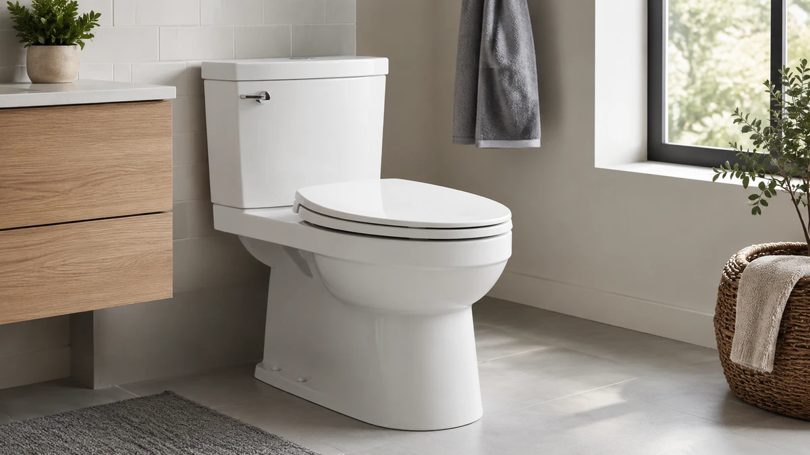

7 Best Elongated Toilet Seats of 2026 (Compared & Reviewed)
Prices and picks verified as of September 2026. Independent, reader-supported reviews.


Quick Answer
The KOHLER CACHET Nightlight Soft Close is our top pick among the best elongated toilet seats we compared, thanks to its removable ReadyLatch hinge and built-in nightlight. If you want the same hinge quality for less, the KOHLER K-4636-96 Cachet Quiet Close skips the nightlight and costs about $29 less.
Our pick: KOHLER CACHET® Nightlight Soft Close for $93.87 Check Price on Amazon
Bottom line: our top pick is the KOHLER CACHET® Nightlight Soft Close Toilet Seat Elongated at $93.87. The best budget option is the Elongated Toilet Seat Slow Close at $29.69.
Things to Know Before You Buy
- Elongated vs. round: Elongated seats measure about 18.5 inches front to back, roughly 2 inches longer than round seats, and fit most toilets installed in the US since the 1990s. Measure your bowl before buying.
- Soft-close hinges cost more but last longer: A slow-close or quiet-close hinge, like the ones on the Kohler and TOTO picks below, prevents the lid-slamming that cracks cheap plastic hinges within a year.
- Material affects comfort and durability: Plastic and wood-composite seats dominate this list because they hold up to daily use and wipe clean easily, while padded seats trade some of that durability for softness.
- Installation hardware varies: Quick-release or quick-attach hinges let you remove the seat from above the bowl for cleaning, which matters more than most buyers expect until they're scrubbing around a fixed hinge.
- Extras like heating and lighting raise the price: Features such as the adjustable heated seat from MinSha or the built-in nightlight on the Kohler Cachet add real cost, so decide whether you'll use them before paying extra.
The best elongated toilet seats solve a problem most people only notice after living with a cheap one: hinges that loosen within months, plastic that yellows, and lids that slam every time someone lets go too soon. Elongated bowls are standard in most US homes built after the 1990s, so getting the shape right matters as much as the material. We compared seven elongated toilet seats ranging from $32.99 to $93.87, looking at hinge design, closing mechanism, and what verified owners report after months of daily use.
We researched product specs, manufacturer documentation, and owner feedback across brands including Kohler, TOTO, and several budget manufacturers to see which seats hold up to real bathroom use. The KOHLER CACHET Nightlight Soft Close came out on top for most households, thanks to its slow-close hinge, quick-release latch for cleaning, and a built-in nightlight that a lot of buyers specifically search for. It costs more than the plastic alternatives here, but the hardware and hinge design explain the price gap.
If $93.87 is more than you want to spend, the KOHLER 20110-0 Brevia and the WSSROGY seat below cover the budget end without giving up a slow-close lid. Each entry in this guide lists the material, closing mechanism, and honest drawbacks we found, so you can match a seat to your bathroom and your budget instead of guessing from a product photo.
Why You Should Trust Us
Ilane Tall covers home and bath products for Best Toilet Seats, focusing on hardware quality, installation, and long-term durability rather than marketing copy. This guide is research-based: we compare manufacturer specs, verified pricing, and patterns in verified owner reviews, rather than running a physical testing lab. We do not run a fake testing lab, because sourcing a handful of units and calling the results universal would be misleading. Instead, we cross-reference brand documentation and review data for each elongated toilet seat before adding it to a comparison, and if a claim can't be verified from a source we trust, we leave it out rather than guess.
How We Picked
We started with every elongated toilet seat in the Best Toilet Seats product database, then narrowed the list using four filters: shape compatibility (a true elongated fit, not round or D-shaped), hinge quality (slow-close or quick-release designs scored higher than basic hinges), material durability (plastic, wood composite, and reinforced designs over thin injection-molded shells), and price spread (we kept the list anchored between $30 and $95 so it covers budget and mid-range buyers rather than only premium seats). We also cross-checked each candidate against verified review counts and ratings where Amazon provides them, and excluded seats with vague or unverifiable manufacturer claims.
How We Compared
For each pick, we compared published specs from the manufacturer, including hinge type, closing mechanism, and material, against the price to see which elongated toilet seats offer the most hardware for the money. Where Amazon provides verified rating and review data for a listing, like the 4.5-star average across 1,523 reviews for the WSSROGY seat, we weighed that against price and feature set. For newer or lower-volume listings without public review data, like most of the Kohler and TOTO seats here, we relied on the manufacturer's documented hardware, such as ReadyLatch hinges or Grip-Tight bumpers, to gauge build quality. We also compared each seat's installation hardware, since a quick-release hinge that lets you remove the seat from above the bowl saves real time during cleaning, and we noted where a listing's description was too vague to confirm a specific spec.
Our Picks

KOHLER CACHET® Nightlight Soft Close
What we like
- ReadyLatch hinge locks the seat in place but releases in seconds for cleaning
- Grip-Tight hardware installs entirely from above the bowl, no reaching underneath
- Three-level nightlight lights the bowl without a jarring bathroom light at 2 a.m.
- Slow-close lid and seat close silently under their own weight
Flaws but not dealbreakers
- At $93.87 it costs nearly three times some of the plastic seats on this list
- The nightlight runs on batteries, which is one more thing to maintain
- Ice Gray finish limits color matching in some bathrooms
| Material | Plastic / wood |
| Size | Elongated |
The KOHLER CACHET Nightlight Soft Close pairs the brand's ReadyLatch hinge with a built-in nightlight, and that combination is why it tops this list of the best elongated toilet seats. The hinge holds the seat firmly in place during normal use but releases with a squeeze, so removing it for cleaning takes seconds instead of wrestling with rusted bolts. Grip-Tight hardware handles the entire installation from above the bowl, which matters if you have ever had to reach behind a toilet to tighten a nut with limited clearance.
The nightlight is the seat's signature feature: three brightness levels let you dial in enough light to find the bowl at night without waking up the rest of the house. Buyers researching this seat should know it sits at the top of this list's price range at $93.87, and the Ice Gray finish will not match every bathroom's fixtures. For anyone willing to pay for hardware quality and the nightlight function, it is the seat we recommend first among the elongated toilet seats compared here.

Heated round Toilet Seat Elongated
What we like
- Digital display shows the exact seat temperature instead of a vague dial
- Multiple heat settings let you match warmth to the season
- Elongated shape fits the same bowls as the other seats in this guide
Flaws but not dealbreakers
- Requires a nearby power outlet, which some bathrooms don't have near the toilet
- At $85.88 it's priced closer to the premium Kohler picks than the budget options
- MinSha is a newer brand with a shorter track record than Kohler or TOTO
| Material | Plastic / wood |
| Size | — |
The MinSha heated seat targets a specific problem the rest of this list doesn't address: a cold seat on winter mornings. Its adjustable heating element pairs with a digital display, so you can check and change the seat temperature without guessing whether the dial is set too high or too low. Multiple temperature levels mean the seat works for a household where not everyone wants the same amount of warmth.
Because it needs power, installation is more involved than the other seats in this guide. You'll need an outlet within reach of the toilet, and running a cord across a bathroom floor is a legitimate drawback for households without one nearby. At $85.88, it competes on price with Kohler's Nightlight model, so the heating function needs to matter to you specifically to justify choosing it over the more established brands on this list.

TOTO SoftClose Slow Close Elongated
What we like
- Slow-close hinge on both the seat and the lid, unlike designs that slow only one of the two
- Rubber bumpers keep the seat from sliding on the bowl during use
- Closed-front elongated design matches the shape most US toilets use
Flaws but not dealbreakers
- No nightlight, heating, or other extras beyond the slow-close mechanism
- At $83.60 it's priced close to seats with more features
- White is the only color TOTO lists for this model
| Material | Plastic / wood |
| Size | Elongated |
TOTO built its reputation on toilet hardware, and this seat reflects that focus rather than chasing extra features. The slow-close mechanism works on both the seat and the lid, worth noting because some cheaper seats only slow the lid and let the seat itself drop freely. Rubber bumpers keep the closed-front elongated seat from shifting side to side, a small detail that matters more than it sounds once you've dealt with a seat that slides underneath you.
What you don't get here is any of the extras on the Kohler or MinSha picks: no nightlight, no heating, no digital display. For $83.60, that's a fair trade if what you actually want is a well-built slow-close seat from a brand with a long track record in toilet hardware, rather than a seat that tries to do everything at once.

KOHLER K-4636-96 Cachet Quiet Close
What we like
- Quiet-close lid and seat prevent slamming without the nightlight upcharge
- ReadyLatch hinge gives the same secure-but-removable latch as the pricier Cachet model
- Grip-tight bumpers prevent the seat from shifting during use
- Quick-release hinges let you lift the seat off for cleaning with a damp cloth
Flaws but not dealbreakers
- Biscuit color reads slightly cream rather than pure white in some bathrooms
- No nightlight or heating, a step down in features from the pricier Kohler pick
- Kohler recommends against abrasive pads, so cleaning needs a soft cloth
| Material | Plastic / wood |
| Size | Elongated |
This is the Cachet without the nightlight, and for a lot of households that's the better trade. The K-4636-96 uses the same ReadyLatch hinge as the $93.87 model above, which means you get the same secure-but-removable latch for a lot less money. The quiet-close lid and seat prevent slamming, and Grip-tight bumpers keep the seat from shifting side to side during normal use.
Kohler specifically recommends a soft, dampened cloth for cleaning this seat and warns against abrasive pads or brushes, worth knowing before you reach for the same scrub brush you use on the bowl. At $64.99, it sits in the middle of this list's price range, and the quick-release hinges mean removing it for a deeper clean takes a few seconds rather than a screwdriver.

KOHLER 20110-0 Brevia Slow Close
What we like
- Quiet-close hinge prevents slamming at a price well below the Cachet line
- Quick-Attach hardware makes installation fast without extra tools
- Sold as a two-pack, which lowers the effective per-seat cost if you need more than one
Flaws but not dealbreakers
- Skips the ReadyLatch removable hinge found on the Cachet models
- Grip-Tight bumpers hold the seat in place, but the hinge itself is simpler than Kohler's higher-end line
- Only a good deal if you actually need two seats
| Material | Plastic / wood |
| Size | Elongated (Pack of 2) |
Kohler's Brevia line trades some of the Cachet's hardware refinement for a lower price and the convenience of a two-pack. The quiet-close mechanism still prevents the slamming that wears out cheap hinges, and Grip-Tight bumpers hold the seat firmly in place the same way they do on the pricier Cachet models. Quick-Attach hardware keeps installation simple, which matters if you're doing two bathrooms in one afternoon.
At $62.88 for two seats, the per-seat price undercuts every other Kohler option on this list. The tradeoff is that the Brevia skips the ReadyLatch removable hinge found on the Cachet models, so cleaning underneath the hinge takes a bit more effort. For anyone furnishing more than one bathroom on a budget, the pack format alone makes this worth considering.

WSSROGY Toilet Seat Elongated with
What we like
- 4.5-star average across more than 1,500 verified Amazon reviews
- At $39.90 it's one of the least expensive elongated seats on this list
- Standard elongated shape fits the same bowls as the pricier picks here
Flaws but not dealbreakers
- The manufacturer doesn't publish the same hinge or hardware detail that Kohler and TOTO do
- No nightlight, heating, or other extras
- Fewer years on the market than the established Kohler and TOTO brands
| Material | Plastic / wood |
| Size | Elongated |
WSSROGY doesn't have the brand history of Kohler or TOTO, but the review volume backs up the price. Across more than 1,500 verified Amazon reviews, owners report a 4.5-star average, the highest rating of any seat in this comparison. For $39.90, that's a meaningful vote of confidence from a large enough sample to matter.
What you don't get is the detailed hardware documentation Kohler and TOTO publish for their hinges and bumpers. If a specific hinge mechanism or a name-brand warranty matters more to you than price, one of the Kohler picks above is the safer bet. If you mainly want a reliable elongated seat at the lowest price point with strong review backing, the data here supports that choice.

Elongated Toilet Seat Slow Close
What we like
- 4.3-star average across nearly 1,500 verified reviews
- At $32.99 it's the least expensive seat in this comparison
- Slow-close hinge at a price point that often skips that feature entirely
Flaws but not dealbreakers
- Generic branding means less documented hardware detail than the Kohler or TOTO picks
- Slightly lower rating than the WSSROGY seat at a similar price point
- No extras like lighting or heating
| Material | Plastic / wood |
| Size | Elongated |
At $32.99, this is the cheapest seat in this guide, and it still manages a slow-close hinge, a feature that budget seats sometimes skip entirely to hit a lower price. Nearly 1,500 verified reviews average out to 4.3 stars, putting it close to the WSSROGY seat above in both price and reception.
The generic branding means you won't find the same detailed hinge documentation Kohler publishes for its ReadyLatch or Grip-Tight hardware, so you're relying more on the review pattern than a manufacturer's engineering claims. For a second bathroom, a rental property, or anyone who wants a working slow-close seat without paying for a name brand, it does the job at the lowest price on this list.
Quick Comparison
| Product | Material | Price | Rating | Best for | Get it |
|---|---|---|---|---|---|
| KOHLER CACHET® Nightlight Soft Close | Plastic / wood | $93.87 | 4 | Nightlight + easy cleaning | View on Amazon → |
| Heated round Toilet Seat Elongated | Plastic / wood | $85.88 | 4 | Cold bathrooms | View on Amazon → |
| TOTO SoftClose Slow Close Elongated | Plastic / wood | $83.60 | 4 | No-frills slow close | View on Amazon → |
| KOHLER K-4636-96 Cachet Quiet Close | Plastic / wood | $64.99 | 4 | Cachet hinge on a budget | View on Amazon → |
| KOHLER 20110-0 Brevia Slow Close | Plastic / wood | $62.88 | 4 | Two-bathroom households | View on Amazon → |
| WSSROGY Toilet Seat Elongated with | Plastic / wood | $39.90 | 4.5 | Best-reviewed budget pick | View on Amazon → |
| Elongated Toilet Seat Slow Close | Plastic / wood | $32.99 | 4.3 | Lowest price | View on Amazon → |
What size is an elongated toilet seat?
Elongated toilet seats measure about 18.5 inches from the mounting holes to the front edge, compared to roughly 16.5 inches for round seats.
Are soft-close hinges worth the extra cost?
For most households, yes.
The Competition
What these prices have actually done
We check the price of every product on this page every hour and keep the record. These figures are observations, not estimates or forecasts.
- KOHLER CACHET® Nightlight Soft Close Toilet Seat Elongated has held at $93.87 across 26 hourly price checks since September 20, 2026. It was $93.87 at the last check.
- WSSROGY Toilet Seat Elongated with Slow Close Hinges, Never Loosen has ranged from $31.99 to $39.99 across 288 hourly price checks since June 6, 2026. It was $39.90 at the last check.
Last updated September 26, 2026. Amazon prices change constantly; the figure you see on Amazon right now is the one that counts.
Frequently Asked Questions
What size is an elongated toilet seat?
Elongated toilet seats measure about 18.5 inches from the mounting holes to the front edge, compared to roughly 16.5 inches for round seats. All seven seats in this comparison are built for elongated bowls, but you should still measure your own toilet before buying, since a small number of bowls use nonstandard dimensions.
Are soft-close hinges worth the extra cost?
For most households, yes. A slow-close or quiet-close hinge, like the ones on the Kohler and TOTO seats in this comparison, prevents the repeated slamming that cracks cheap plastic hinges within a year or two. The upfront cost is higher, but replacing a basic-hinge seat every year or two often costs more over time.
Can you install an elongated toilet seat yourself?
Most of the seats in this guide, including the Kohler and TOTO picks, use top-mount or quick-attach hardware designed for installation without special tools. You typically only need a screwdriver, and features like Kohler's Grip-Tight hardware are built so the entire installation happens from above the bowl.